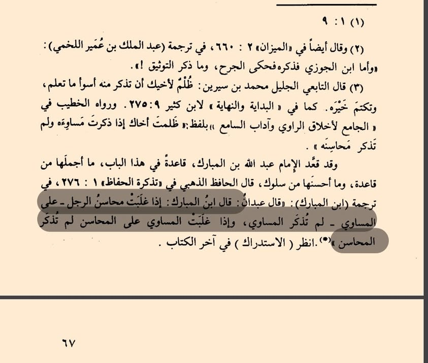

কোন দল বা ব্যক্তির সমালোচনা করবেন আর কোন দল বা ব্যক্তির সমালোচনা থেকে বিরত থাকবেন,…
১১ জুন, ২০২৪
কোন দল বা ব্যক্তির সমালোচনা করবেন আর কোন দল বা ব্যক্তির সমালোচনা থেকে বিরত থাকবেন, তা জানতে ইমাম আব্দুল্লাহ বিন মুবারক রাহ-এর উক্তিটি অত্যান্ত চমৎকার। তিনি বলেন—
قال ابن المبارك : إذا غلبت محاسن الرجل على المساوي لم تذكر المساوي، وإذا غلَبَتْ المساوي على المحاسن لم تذكر المحاسن.
"যদি একজন মানুষের গুণাবলী তার দোষগুলিকে ছাড়িয়ে যায়, তাহলে তার দোষগুলি উল্লেখ করা হয় না। আর যদি দোষগুলি গুণাবলীকে ছাড়িয়ে যায়, তাহলে তার গুণাবলী উল্লেখ করা হয় না।"
এ সহজ মূলনীতি মনে রাখলে অনেক অন্যায় সমালোচনা থেকে আত্মরক্ষা করা সম্ভব।
কোন দল বা ব্যক্তির সমালোচনা করবেন আর কোন দল বা ব্যক্তির সমালোচনা থেকে বিরত থাকবেন, তা জানতে ইমাম আব্দুল্লাহ বিন মুবারক রাহ-এর উক্তিটি অত্যান্ত চমৎকার। তিনি বলেন—
قال ابن المبارك : إذا غلبت محاسن الرجل على المساوي لم تذكر المساوي، وإذا غلَبَتْ المساوي على المحاسن لم تذكر المحاسن.
"যদি একজন মানুষের গুণাবলী তার দোষগুলিকে ছাড়িয়ে যায়, তাহলে তার দোষগুলি উল্লেখ করা হয় না। আর যদি দোষগুলি গুণাবলীকে ছাড়িয়ে যায়, তাহলে তার গুণাবলী উল্লেখ করা হয় না।"
এ সহজ মূলনীতি মনে রাখলে অনেক অন্যায় সমালোচনা থেকে আত্মরক্ষা করা সম্ভব।
